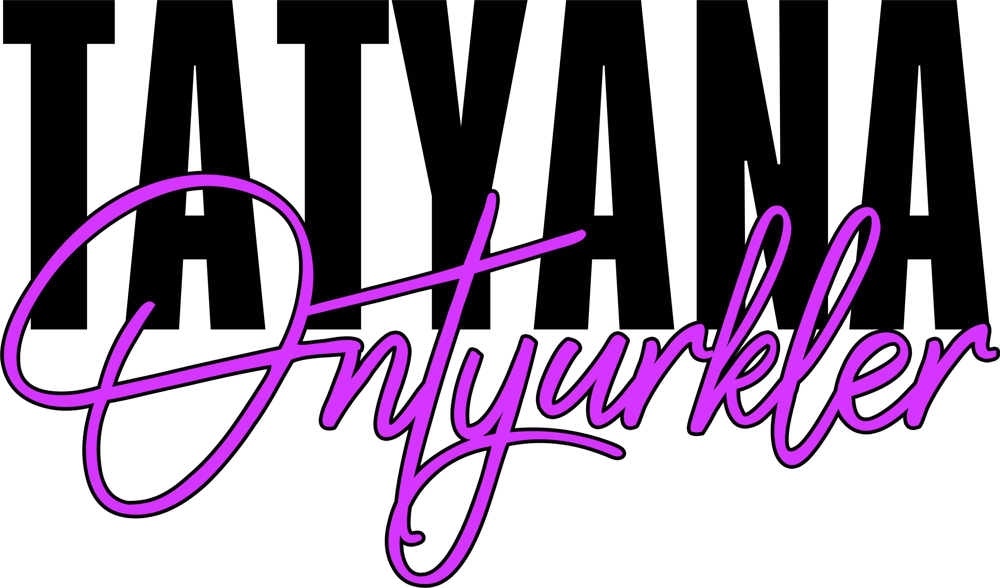
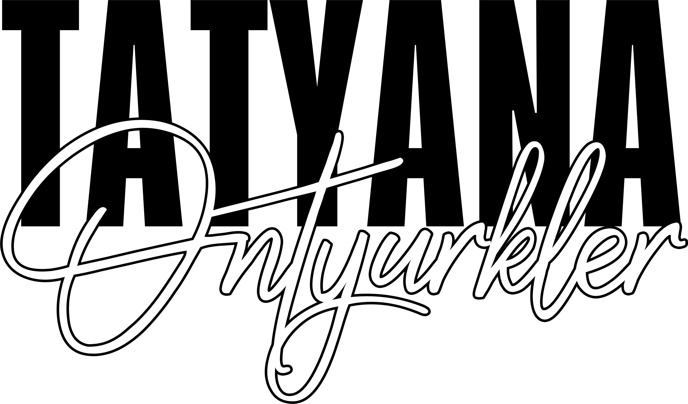

01 — Логотип
Логотип и его символика

Татьяна
это имя эксперта
Онтюрклер
это фамилия эксперта
Версии логотипа
01 — Основная
На светлом и нейтральном фоне. Документы, сайт, презентации, соцсети.
02 — На тёмном фоне
Логотип на чёрном. Баннеры, тёмные обложки, рекламные материалы.

03 — Монохром
Чёрный монохром. Печать на светлых носителях, штампы, вышивка, гравировка.